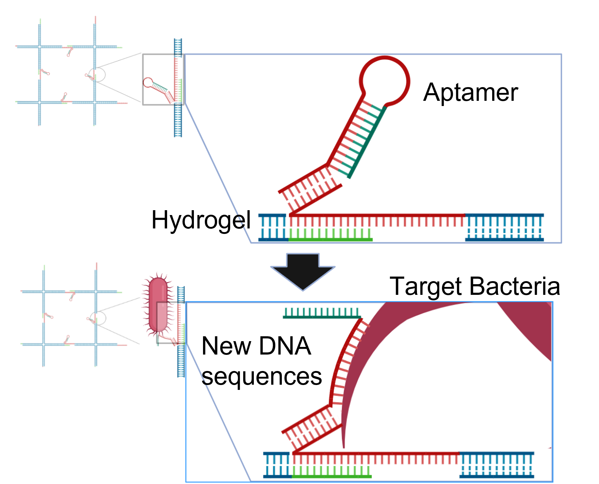
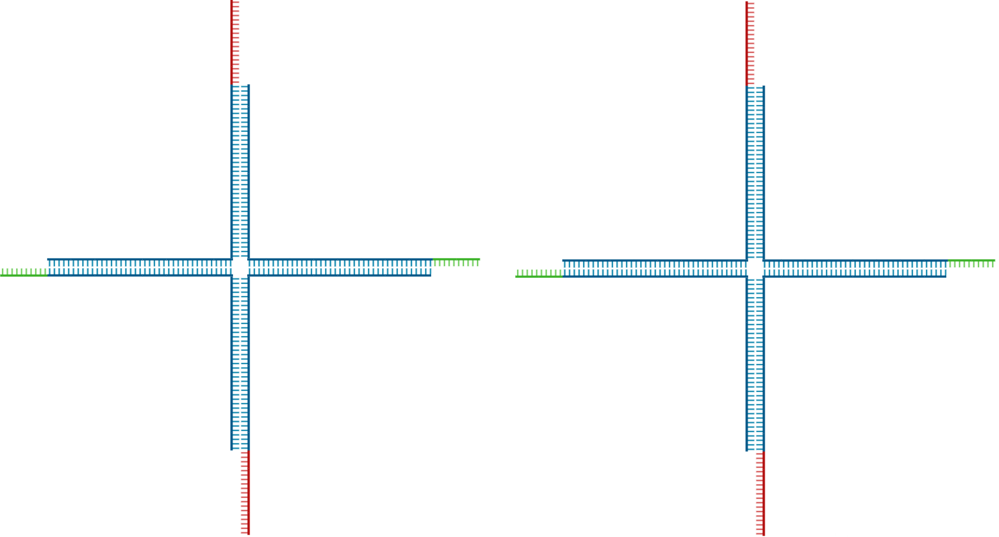

Overview of the design

もう少し簡潔に全体の流れが分かる図にしたい
私たちが設計したHungry Gelは、DNAハイドロゲル自体が標的分子を検出し、検出後にその周辺のローカルな位置でのみゲル溶解を引き起こすというシステムです。これを実現するために私たちは、DNAアプタマー、エントロピー駆動回路、DNAハイドロゲルという機能の異なる3つのDNAモジュールを結合してシステムを構築しました。システムの一連の動作は、まずアプタマーが標的細菌を認識することから始まります。この認識が引き金となって増幅回路が起動し、ゲルの架橋構造を切断する一本鎖DNAが大量に放出されます。その結果、標的細菌のすぐ近くのゲルだけが選択的に溶解し、まるでマクロファージが異物を飲み込むかのように、細菌をゲル内部へと捕捉します。
DNA Aptamer
もっと見るだけで理解できるようなアプタマーの図を入れる(ないしはgif)
アプタマーは、特定の分子のみに強く結合する短いDNAまたはRNA配列である。さらに、アプタマーの配列を変更することで、標的となる細菌も変更できる。この実験では、アプタマーが標的細菌に反応し、新たなDNA配列を露出させるという役割を持つ。 具体的には、アプタマーはハイドロゲルに固定され、他の分子とは反応せず、標的の細菌が接近するのを待っています。そして、標的細菌がアプタマーに接近するとアプタマーは標的細菌にくっつき、構造が変化します。これによって、アプタマーは自身の折りたたまれた立体構造を解き、それまで内部に隠されていた新たなDNA配列が露出します。この露出した配列は、次のエントロピー駆動回路の触媒として機能します。
Entropy driven amplification circuit

エントロピー駆動回路の役割は、アプタマーが生成する微弱な出力信号の濃度を、ハイドロゲル溶解に必要なレベルまで増幅することです。私たちは、Zhangらが提案した酵素を用いない増幅回路[1]を採用します。この回路の原動力は、溶液中の分子数の増加であり、これがエントロピーの増加をもたらします。回路に用いられている配列はAppendixの項に記載しています。
回路の動作プロセスは以下の通りです。上の図の中で、触媒と呼ばれる1本鎖DNAが、基質と呼ばれる大量の3本鎖DNA複合体と燃料と呼ばれる1本鎖DNAを含む溶液に添加されると、回路が開始されます。回路が動作すると、出力と呼ばれる1本鎖DNAが生成されます。この回路の重要な特徴は、反応の最後に触媒が再生されることです。この特徴により、プロセスが複数回繰り返されます。これによって回路は増幅効果を持ち、少量の触媒が大量の出力を生成することができます。
DNA Hydrogel
右側はGIFにしたい


DNAハイドロゲルは、相互に結合したDNA鎖によって形成される三次元ネットワークです。従来のハイドロゲルとは異なり、DNAベースであることによっていくつかの利点があります。本プロジェクトでは、いくつかのメリットのうち特にゲル内の架橋点を破壊する他のDNA分子を添加することで、ゲルを溶解することが可能であるという特性に注目しました。
本プロジェクトでは、数あるDNAハイドロゲルのモチーフの中で、図のような4分岐モチーフを採用しました。ここで、赤色のスティッキーエンドと緑色のスティッキーエンドは異なる長さに設計しています。そして、上のスティッキーエンドが左のスティッキーエンドと、下のスティッキーエンドが右のスティッキーエンドと相補的な配列になっています。
配列設計
私たちはDNAハイドロゲルを形成するDNA配列を設計しました。Kandatsuらの研究[2]を参考にして、低濃度でのゲル化を可能にするためにアーム長を34塩基に設定しました。また、後に出力配列の作用でゲルの架橋結合を選択的に解除できるようにするために、長さの異なる2つのスティッキーエンドを設計しました。具体的な長さは、長いほうが14塩基、短いほうが8塩基となっています。
具体的な配列はAppendixに記載しています。
形成メカニズム

図に示すように、モチーフはスティッキーエンドを介して結合し、大きなネットワーク構造を形成します。拡大図に示すように、異なる長さの赤色と緑色のスティッキーエンドが結合しています。ここで、長さの違いが結合破壊の鍵となるポイントになります。
溶解メカニズム

結合している赤と緑の2つのスティッキーエンドの長さの違いのために、結合に使われていない1本鎖DNAが露出しています。この部分に、赤いスティッキーエンドと相補的な1本鎖DNA、このプロジェクトではエントロピー駆動回路のアウトプットを添加します。その後、システム全体がより安定な状態に達しようとするため、出力配列が元の結合を破壊し、新たな結合を形成します。この微視的な結合破壊が無数に起こると、ゲルネットワーク全体が崩壊し、ハイドロゲルが溶解します。
sysem integration
Hungry Gelシステムは、3つのDNAモジュールを分子レベルで統合することで実現されています。アプタマーが標的細菌と結合した際の構造変化により露出するDNA配列が、そのままエントロピー駆動回路のカタリスト配列として機能するよう設計しました。これにより、標的検出が直接的に信号増幅回路を活性化する仕組みを構築しています。今回の実験では、このカタリスト配列を外部から添加することで回路の動作を検証しました。
システムの核心となるのは、エントロピー駆動回路の出力配列とDNAハイドロゲルの架橋構造との相互作用設計です。短いスティッキーエンドの長さを出力配列よりも短く設計することで、ハイブリダイゼーションによる鎖置換反応が効率的に進行します。この設計により、熱力学的により安定な結合が形成される際に元の架橋結合が自発的に切断され、局所的なゲル溶解が引き起こされます。
標的細菌近傍でのみゲルが溶解する機能の実現においては、アプタマーの構造変化が標的細菌近傍でのみ起こることを利用しています。この局所的な構造変化により、回路活性化からゲル溶解まで一連の反応が空間的に制限され、マクロファージの選択的貪食作用を模倣した機能が実現されます。
システム全体の安定性確保のため、NUPACKソフトウェアを用いてDNAハイドロゲルの全配列を設計し、エントロピー駆動回路とハイドロゲル配列間での非特異的相互作用を回避することで、設計通りの特異的な動作を保証しています。
Reference
[1]David Yu Zhang, Andrew J. Turberfield, Bernard Yurke, and Erik Winfree(2007)”Engineering Entropy-Driven Reactions and Networks Catalyzed by DNA”.Science,318,pp.1121-1125
[2]Daisuke Kandatsu et al.(2016)”Reversible Gel-Sol Transition of a Photo-Responsive DNA Gel”.ChemBioChem,17.pp.1118-1121
Appendix
Sequence List
Entropy driven amplification circuit
| (see entropy driven circuit diagram) | Sequence (5'→3') |
|---|---|
| 1 | CTTTCCTACA |
| 2 | CCTACGTCTCCAACTAACTTACGG |
| 3 | CCCT |
| 4 | CATTCAATACCCTACG |
| 5 | TCTCCA |
| 6 | CCACATACATCATATT |
DNA Hydrogel
| No. | Sequence (5'→3') |
|---|---|
| 1 | AAGTTTTGACCTTAGGGTTCCCCTTACGCATCTTCGCGGGTAGCTAAATTAAGATTGCTAGCGAGGCCGACGAAGGTGTAGG |
| 2 | GGCCTCGCTAGCAATCTTAATTTAGCTACCCGCGACATCAAGCCACGGCGCTGAGAAAGATGGAACAACCTACACC |
| 3 | TTGTTCCATCTTTCTCAGCGCCGTGGCTTGATGTCCTGATCTCTTTAAACGGAAGCTTTGACGAAACGGACGAAGGTGTAGG |
| 4 | CGTTTCGTCAAAGCTTCCGTTTAAAGAGATCAGGAAGATGCGTAAGGGGAACCCTAAGGTCAAAACTTCCTACACC |